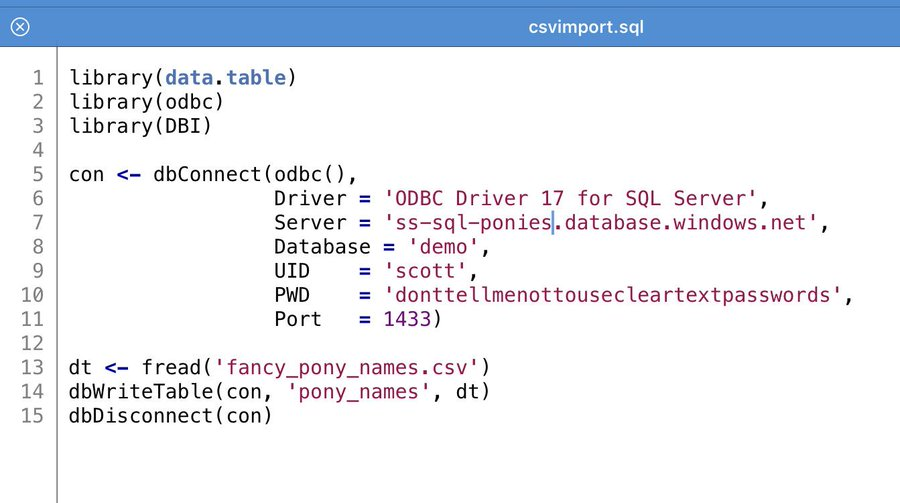

Import CSV file to a Database, quickly
Challenge: you have a csv file and you need to import it into a new table in a database. You have 5 mins to get it done. What tools do you use?
Below are many different solutions to this common problem, for a variety of databases and operating systems.
Table of contents:
- Any database with any OS
- Any database with Windows
- Any Database with MacOS
- MS SQL Server Specific
- SQLite specific
- MySQL specific
- Postgresql specific
- Oracle specific
- Hadoop specific
- Alternative: Just treat the CSV as SQL
Any database with any OS
Python with Pandas
import pandas from sqlalchemy import create_engine engine = create_engine('connection string') df = pandas.read_csv("path/to.csv") df.to_sql("table_name", engine)"R"
Via Scott Stanfield:
Load in R with data.table fread() method. It'll impute the data types...gets you 80% of the way there. 
csv2db — "The CSV command line loader."
-
csvsql --db postgresql:///test --tables dogideas --insert data/pets/dogideas.csv NimbleText — Generate SQL Insert Statements with NimbleText (web version)
Datagrip: import/export — "There is a dedicated UI for importing DSV (CSV and TSV) files to the database."
Navicat ($$$)
Some brute force approaches (common!)
Sublime (editor), use Multiple line edit to turn the data into SQL
vim, "A combination of macros, regex, and standard commands that change each line to an insert statement." (via OJ)
(Any editor), use search/replace (perhaps with regular expressions) to turn the data into SQL
(Any spreadsheet), write formulae that combine the data together to turn the data into SQL, "
="('" + A1 + "','" + A2..." etc.`Automate the search/replace approach with NimbleText
$ONCE CREATE TABLE Contacts ("<% $row.replace(/[ ]*,[ ]*/g,'" varchar(50) NULL,\n"') %>" varchar(50) NULL) GO Insert into Contacts ('<% $row.replace(/[ ]*,[ ]*/g,"','") %>') Values $EACH+ (<% ("'" + $row + "'").replace(/[ ]*,[ ]*/g,"','").replace(/'NULL'/g,'NULL') %>)<% if ($rowNumOne != $numrows) { ',' } %> $ONCE GO
Any database with Windows
Microsoft Log Parser
Logparser -o sql -server 127.0.0.1 -database -createtable on "select * into newtable from C:\Apps\Logs\Logfile.log"Alteryx ($$$)
- drag in an
Input data, point it at the csv file. - (optional) drag in a
Select, use it to configure the column types - drag in an
Output data, point it at the database (and set the table name) - Run!
- drag in an
Generate SQL Insert Statements with NimbleText (desktop version)
The desktop version lets you use a "real" CSV parser that handles embedded delimiters/line breaks etc. Just switch on the
use qualifieroption undertools|options.
Any Database with MacOS
(No examples available, so use solutions for "Any database with any OS")
MS SQL Server Specific
Sql Server Management Studio (SSMS) — right click on Database, Tasks, "Import Flat File..."
BCP (Bulk Copy Program)
TSQL: BULK INSERT
BULK INSERT Sales.Orders FROM '\\SystemX\DiskZ\Sales\data\orders.csv' WITH ( FIRSTROW = 2, FORMAT='CSV');Powershell: Four Easy Ways to Import CSV Files to SQL Server with PowerShell
Powershell: Import-DbaCsv from Chrissy LeMaire
Import-DbaCsv -Path .\housing.csv -SqlInstance sql001 -Database markets -Table housing -Delimiter "`t" -NoHeaderRow
SQLite specific
Tutorial: Import a CSV File Into an SQLite Table
If there are no header names in the csv, then find the column names and run:
create table mytable (header_a, header_b, header_c)Next step (do this whether you needed the previous step or not)
.mode csv .import data.csv mytable
MySQL specific
-
LOAD DATA INFILE 'c:/tmp/discounts.csv' INTO TABLE discounts FIELDS TERMINATED BY ',' ENCLOSED BY '"' LINES TERMINATED BY '\n' IGNORE 1 ROWS; PhpMyAdmin
Postgresql specific
Two techniques: Copy command in sql itself, and \copy command in psql (interactive commandline).
Sql-copy — requires root access
COPY dog_habits FROM '/home/user521/pets/dog_habits.csv' DELIMITER ',' CSV HEADER;psql \copy — use interactive psql commandline where file permissions are an issue
psql -c "\copy sample FROM '/home/user521/pets/dog_habits.csv' WITH (FORMAT CSV)"
Oracle specific
-
"a couple of clicks and we're done"
Hadoop specific
@BenBrandwood gives this Hadoop example...
hive> CREATE EXTERNAL TABLE IF NOT EXISTS test_ext > (ID int, > DEPT int, > NAME string > ) > ROW FORMAT DELIMITED > FIELDS TERMINATED BY ',' > STORED AS TEXTFILE > LOCATION '/test'; OK Time taken: 0.395 seconds
Alternative: Just treat the CSV as SQL
- TextQL — Execute SQL against CSV or TSV.
- q — Run SQL directly on CSV Files
- RBQL — Rainbow Query Language, a SQL-like language with JavaScript or Python backend.
- PSKit Query — Powershell module lets you run simple queries over objects, including imported with csv.